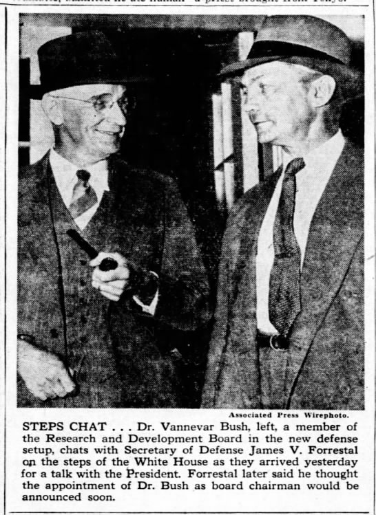

Reading Response
"As We May Think" and "Long Live the Web"
As I was reading “As We May Think” by Vanessa Bush, I found myself agreeing to a lot of the ideas and points she was talking about. Technology does make life a lot easier for everyone. It promotes more efficiency and instead of focusing on tedious tasks, people can use technology and then spend more effort focusing on any other works. While technology has progressed alot I dont think humans have used technology very efficiently. For example, as I was reading the article, Bush talked about how the idea of calculators were invented along time before I was reminded that calculators have progressed so much and that they can even solve equations and graph out problems. However schools still teach kids to memorize equations and memorize graphs, when wouldn’t the more efficient way would be to teach kids how to use the calculator to graph and solve equations. So students wouldn’t have to waste time on memorizing useless information when technology already does that for them and does a better job. Students should focus on how to utilize the technology. And so I was reading it I kept thinking about how it was great that technology was advancing, but the world also needed to be evolving with technology.
“Long Live the Web” by Tim-Berners-Lee talks about how the web went from its original purpose of being a free space where everyone can share information and put out things they like to a place where corporations are running ads everywhere, everyone wants to make money, companies are controlling what users view and what ads are shown. The web has become less of an open space and more of a controlled setting. This also ties into some of my thoughts I had when I read “As We May Think”, because it’s not just corporations that control the internet but also the government. The laws that are made by the government are made by politicians who have no idea how the internet works and what it is. For example when you look at the time where the government questioned Mark Zuckerberg about Facebook, they had a lot of misinformation and would constantly be corrected. Those are the same people who end up making and enforcing laws. It goes back to my point where the world, including the government, should try to evolve with technology.